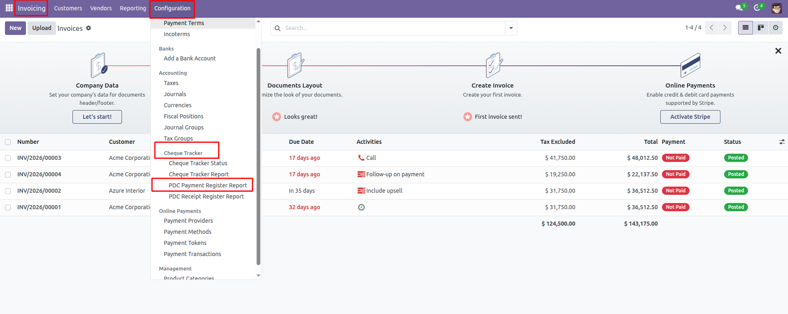
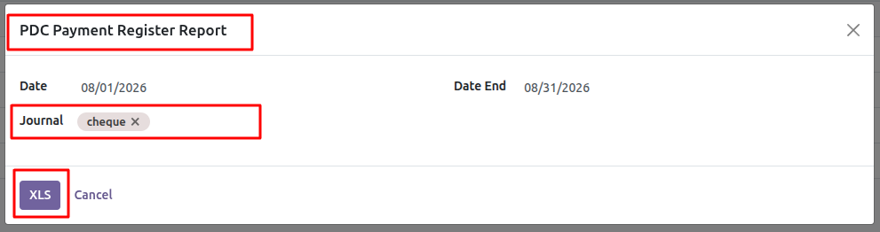
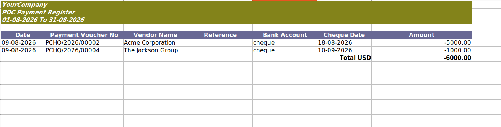

PDC Payment Register Report
PDC Payment Register Report provides an Excel report
for outgoing PDC cheque payments in Odoo. It allows accounting users
to filter payments by date range and bank journal and export the
required payment details into an XLSX report.
Module Dependency
Important:
This module depends on the
Cheque Tracker Alerts module.
The Cheque Tracker Alerts module must be installed
before using the PDC Payment Register Report.
The Cheque Tracker Alerts module is available on the
AchaOdoo Apps Store.
View AchaOdoo modules on the Odoo Apps Store
Key Functionality
-
PDC Payment Reporting:
Generate an Excel report for outgoing PDC cheque payments.
-
Date Range:
Filter payments using a start date and end date.
-
Journal Filter:
Select one or more bank journals for the report.
-
Cheque Tracker Integration:
Only payments associated with a cheque tracker status configured
to require an alert are included.
-
Excel Export:
Export the payment register in XLSX format.
-
Payment Details:
The report includes payment date, payment voucher number,
vendor, reference, bank account, cheque date, and amount.
-
Total Amount:
The report displays the total amount of the selected payments.
Cheque Tracker Dependency
This report uses the cheque tracker functionality provided by the
Cheque Tracker Alerts module.
The PDC Payment Register Report identifies applicable payments using
the cheque tracker status configured on the payment.
Therefore, the Cheque Tracker Alerts module must be installed and
properly configured before generating this report.
Access the Report
After installing the required modules, the report can be accessed
from the Odoo Accounting application.
Navigate to:
Accounting → Configuration → Cheque Tracker →
PDC Payment Register Report

Report Wizard
The report wizard allows users to select the required date range
and bank journal before generating the Excel report.

Report Filters
-
Date:
Select the beginning of the reporting period.
-
Date End:
Select the end of the reporting period.
-
Journal:
Select one or more bank journals.
Generated Excel Report
After clicking the XLS button, the report is
generated in Excel format.

Report Information
- Date
- Payment Voucher No
- Vendor Name
- Reference
- Bank Account
- Cheque Date
- Amount
- Total Amount
How It Works
- Install the Cheque Tracker Alerts module.
- Configure the required PDC/CDC cheque tracker statuses.
- Record PDC payments in Odoo.
- Open the PDC Payment Register Report.
- Select the required date range.
- Select one or more bank journals if required.
- Click XLS to generate the report.
- Review the exported PDC payment register in Excel.
Requirements
- Odoo Accounting
- Cheque Tracker Alerts module
- Bank journals configured in Odoo
- PDC cheque payments with cheque tracker status
About AchaOdoo
AchaOdoo specializes in Odoo ERP development, customizations,
integrations, technical consulting, and training. We build
practical Odoo modules and solutions for businesses and Odoo
developers.
Support
Need assistance or have questions about this module?